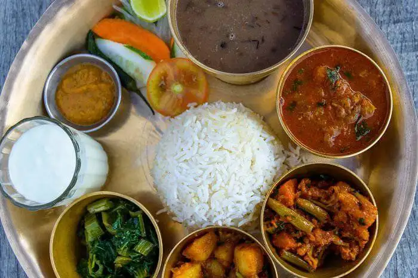

THAKALI KHANA

The Thakali are the people originated from the Thak Khola region of the Mustang District in Nepal. Thakali meal consists of locally grown buckwheat, barley, millet, rice, maize and dal. A kind of dal is also made from the dried, ground buckwheat leaves. Also, other special pickles, gundruk, and ghee are also included. Thakali meal is collectively made up of these all food items.Thakali food basically comprises dal-bhat-tharkari − lentils, rice and vegetables, with masu (meat) for non-vegetarians. However, modern thakali restaurants also offer mo-mos (meat dumplings) and thukpa (noodle soup). Sometimes buckwheat breads (like chapatis or pancakes) may be served with the basic curry and buckwheat finger chips (kachhyamba) as an appetizer. Desserts include sweet curd or phopké (fermented rice). If you are wondering that Nepal is all about Momos (steamed dumplings), Sel Roti (Nepali homemade ring-shaped rice bread) and Thukpa (Nepali Tibetan noodle soup), there’s more in store. Though the staple Dal-Bhat-Tarkari (Lentils-Rice and Veggies) is eaten throughout Nepal on a daily basis, yet the Thakali food is becoming gaining its much-needed prominence.
The Thakalis who are inhabitants of Thak Khola region of Mustang District is home to Thakali cuisine. The Thak-Khola Valley in ancient days used to be an easy trade route through the high Himalayas. And as trade was an important part of the Thakali people, they could import vegetables, and being in the higher Himalayan region most vegetables served were cooked in the dried version.
A typical Thakali thali (thakali meal plate)
A typical serving of Thakali plate would see Dal, Bhaat, Tarkari and Meat (lentil soup, rice, green vegetable) along with Kanchhemba (Buckwheat finger chips) the Mustang Alu topped with Jimbu (Himalayan leaf garlic) and a generous dollop of ghee (clarified butter). Though it’s low on desserts a sweet curd or Phopké (fermented rice) completes the meal. Vivek Sherchan, Owner, Jimbu Thakali by Capital Grill, who himself is a Thakali from Tukche village of Mustang Region says “the style of preparation of Thakali food is different due to the use of some ingredients that are characteristic of Thakali cuisine like Sukuti or dried goat/yak meat, Gundruk (fermented leafy green vegetables) with soybean along with green cabbage, buckwheat, barley flour and timbur, a spicy Himalayan spice. This gives the cuisine a whole new taste and flavour. The thali is not only appealing in taste but also visually with a variety of colours from the pale green dal, green leafy veggies, rich red meat, rice being white along with the chutneys like mula ko achaar (white radish pickle), chap/golbjeda ko chutney (fresh tomato pickle)”.Watch Full RecipeThakali Recipe